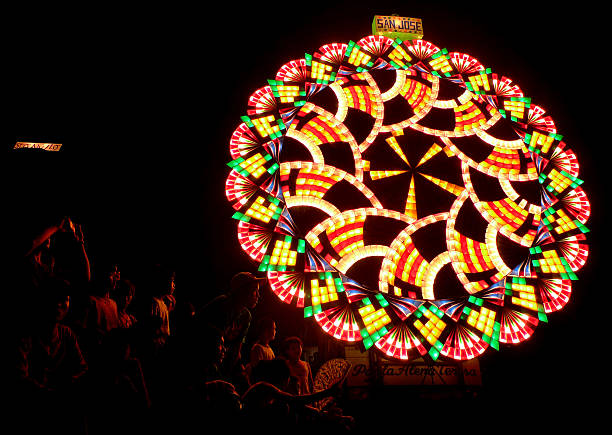
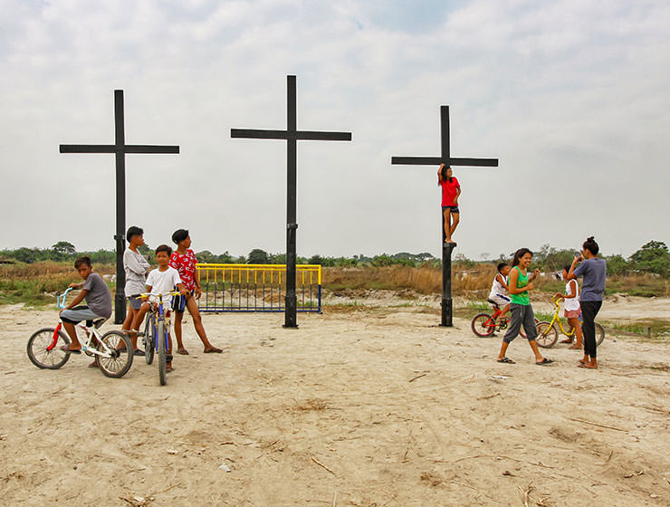
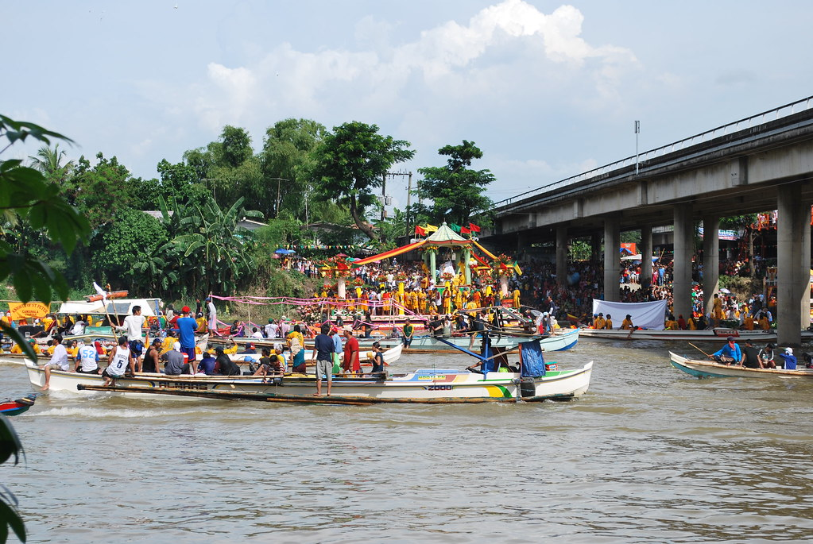
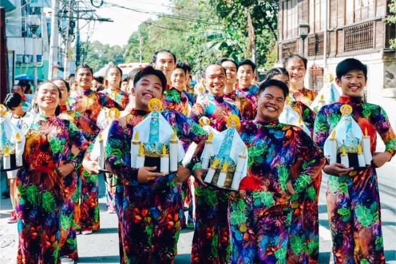
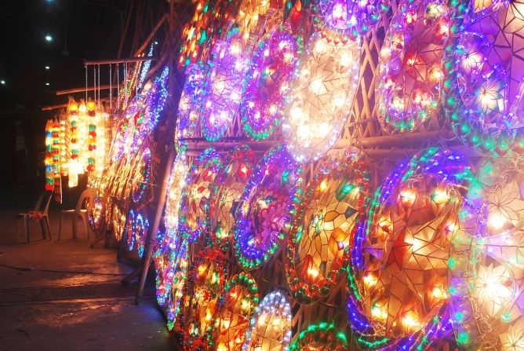

Pampanga celebrates year-round — join the festivities
From the world-famous Giant Lantern Festival to intimate barangay fiestas, Pampanga's festive spirit is alive throughout the year.

Pampanga is famous for its dramatic Lenten rites. In San Pedro Cutud, Bacolor, and other towns, devotees participate in flagellation and crucifixion rites as acts of penance — drawing international media attention every year.

May is fiesta season across Pampanga. Each town celebrates its patron saint with street parades, carnivals, food fairs, live music, and fireworks. A joyful time to experience the warmth of Kapampangan hospitality.

Held in San Fernando to celebrate the founding anniversary of Pampanga, the Sinukwan Festival showcases Kapampangan culture through street dancing, music, art exhibitions, and culinary contests.

The crown jewel of Pampanga's festivals. Held in San Fernando every third Saturday of December, competing barangays showcase enormous, elaborately designed lanterns (parols) — some reaching up to 6 meters in diameter — illuminated by thousands of lights in breathtaking synchronized patterns.
Learn More →The Ligligan Parul is recognized as one of the grandest Christmas celebrations in the world. Don't miss it.
Discover the Festival